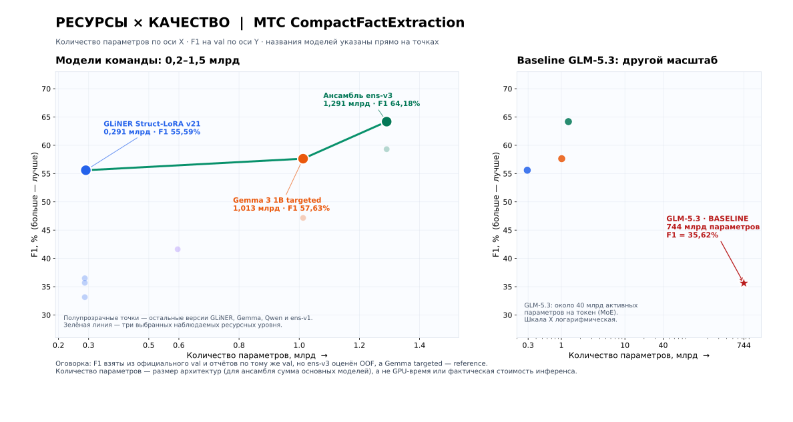

ШАГ 01
Наивная склейка
Precision 0,52 — можно лучше
← → переключают слайды · «Обзор» показывает все слайды · «Печать / PDF» — экспорт деки
Команда one-zero-eight
Innopolis Global Hack · 13–16 ноября 2026
Команда
one-zero-eightInnopolis Global Hack · 13–16 ноября 2026 · кейс MTS MWS CompactFactExtraction
Зачем это нужно
01 / ПроблемаКомпактная модель сокращает расходы в 9–90 раз
После разговора с клиентом оператор сам составляет заявку — процесс удлиняется на каждом обращении.
Колоссальные затраты человеко-часов
Приемлемое качество за неоправданную цену
День 1 · первый эксперимент
03 / День 1Вывод дня 1: временные интервалы требуют отдельной обработки.
День 2 · новые условия
04 / День 2Вывод дня 2: две модели можно объединить в ансамбль.
День 3 · ансамбль
05 / День 3ШАГ 01
Precision 0,52 — можно лучше
ШАГ 02
Лучше, но недостаточно
ШАГ 03
Precision 0,73
ШАГ 04
Метрики упали — не берём
| precision | recall | F1 | temporal | state | grounding | |
|---|---|---|---|---|---|---|
| Baseline glm-5.3 | 0,335 | 0,381 | 0,356 | 0,471 | 0,535 | 0,784 |
| Финал (OOF) | 0,758 | 0,557 | 0,642 | 0,492 | 0,571 | 0,798 |
| Δ к baseline | +126,4% | +46,3% | +80,2% | +4,6% | +6,9% | +1,9% |
Устройство решения
06 / АрхитектураGLiNER и Gemma работают параллельно; логистическая регрессия решает, чьи факты попадают в ответ
Обучение
Как обучалиАнсамбль состоит из двух предобученных моделей, реранкера и жадной настройки порогов.
LoRA-адаптер runs/struct-lora-v21
tau по каждому атрибуту (0.3…0.9).tau_attr:
LoRA-адаптер gemma-v21-targeted-gen
Обучение
ВоспроизводимостьВсе входы зафиксированы хешами; цепочка перепроверена на чистой копии репозитория и на другой машине.
# GLiNER: seed 42, 3 эпохи, батч 8×2, LoRA r16 / α32 python cfe/struct_train.py --epochs 3 --batch-size 8 --accum 2 --seed 42 --data struct # Gemma: seed 42, 3 эпохи, lr 2e-4, батч 4×4, LoRA r16 / α32 python train.py --model gemma-3-1b-it --seed 42 \ --train-file data/targeted_gen_v21_ctx3k/sft_train.jsonl # реранкер и проверка входов python cfe/ensemble.py cv ./repro.sh verify # sha256 всех входов
Версии: torch 2.14.1+cu126 · transformers 5.23.0 · peft 0.21.3 · gliner2 2.1.0 · uv.lock. Базы: gliner2.5-multi-v1 @ 7b00527, gemma-3-1b-it (sha256 3d4ef8d7…).
sft_train 46316203…Ресурсы × качество
Параметры и F1
Результаты
Гейты кейса| модель | P | R | F1 | temporal | state | grounding | схема | гейты |
|---|---|---|---|---|---|---|---|---|
| GLiNER | 0,6414 | 0,4905 | 0,5559 | 0,3937 | 0,5185 | 0,7602(span 0,973) | 100% | ✕✓✕ |
| Gemma3-1b | 0,5440 | 0,5696 | 0,5565 | 0,4629 | 0,5634 | 0,7907 | 100% | ✓✓✓ |
| Ансамбль | 0,7579 | 0,5566 | 0,6418 | 0,4923 | 0,5714 | 0,7984(span 0,9761) | 100% | ✓✓✓ |
| (base line) glm-5.3 | 0,3348 | 0,3805 | 0,3562 | 0,4706 | 0,5345 | 0,7835 | — | ✓✓✓ |
| порог гейта | 0,3148 | 0,3605 | 0,3361 | 0,4506 | 0,5145 | 0,7635 | — | — |
Корректность схемы — 100%: 383 из 383 звонков val без нарушений (ключи, типы, даты с valid_to ≥ valid_from, спикер реплики, границы span). У Gemma все 383 сырых ответа — валидный JSON-массив. На шумных срезах p20 / p40 / p60 — 0 нарушений (по 40 звонков на срез).
Единая методика замеров
Задержка и память| конфигурация | выборка | с / звонок | GPU-с / звонок | память |
|---|---|---|---|---|
| GLiNER · V100 · батч 16 | val, 383 | 1,1 | 1,0 | VRAM 6,7 ГБ · RSS 3,2 ГБ |
| Gemma · V100 · HF · батч 16 | val, 383 | 2,07 | 2,07 (230 токенов) | VRAM 6,3 ГБ · RSS 3,0 ГБ |
| Ансамбль · V100 · HF · батч 16 | val, 383 | 2,90 | 2,65 (GLiNER 0,97 + Gemma 1,68) | VRAM 8,8 ГБ · RSS 3,7 ГБ |
| Ансамбль · V100 · HF · батч 1 | 5 звонков | 14,9 (p50 14,1 · p95 17,9) | 14,6 (1,6 + 13,0) | VRAM 5,4 ГБ · RSS 3,6 ГБ |
| Ансамбль · V100 · vLLM · батч 1 (образ cfe-gpu:1.0-v100) | 5 звонков | 2,66 (p50 2,34 · p95 4,11) | 2,30 (0,86 + 1,43) | VRAM 3,3 ГБ + vLLM, всего 16,6 ГБ · RSS 3,2 ГБ |
| Ансамбль · CPU 16 ядер | 5 звонков | 36,8 (p50 29,8 · p95 66,6) | — | RSS 8,85 ГБ |
| Ансамбль · CPU 8 ядер | 40 звонков | 102 (p50 89 · p95 244) | — | RSS 9,2 ГБ |
Выборка vLLM мала (5 звонков): это замер задержки; HF-замер на полном val. 16,6 ГБ у vLLM — в основном резерв 35% GPU под KV-кэш. Сервер общий, секунды завышены.
Устойчивость
Зашумлённость| срез | P | R | F1 | temporal | state | grounding_turn |
|---|---|---|---|---|---|---|
| val | 0,745 | 0,580 | 0,652 | 0,500 | 0,642 | 0,792 |
| p20 | 0,757 | 0,527 | 0,621 | 0,478 | 0,508 | 0,762 |
| p40 | 0,746 | 0,469 | 0,576 | 0,509 | 0,508 | 0,691 |
| p60 | 0,771 | 0,406 | 0,532 | 0,633 | 0,508 | 0,702 |
val — без добавленного шума (в нём уже ASR-шум организаторов); p20 / p40 / p60 — тот же val + шум 0,20 / 0,40 / 0,60. Собственная симуляция (cfe/asr_noise.py), не скрытый adversarial-тест. Первые 40 звонков: F1 val 0,652, а не 0,642 (OOF, все 383).
| тип факта | val | p20 | p40 | p60 |
|---|---|---|---|---|
| ticket_status | 1,00 | 0,98 | 0,94 | 0,88 |
| tariff | 0,82 | 0,76 | 0,53 | 0,47 |
| service_state | 0,51 | 0,40 | 0,33 | 0,29 |
| action | 0,37 | 0,26 | 0,21 | 0,24 |
| agreement | 0,33 | 0,33 | 0,32 | 0,19 |
Precision 0,75–0,77 на всех срезах: модель реже угадывает, но реже ошибается. Теряется полнота: 0,580 → 0,406. F1 к val: −0,031 (p20), −0,077 (p40), −0,121 (p60).
service_state и tariff: значение приходится распознавать по испорченным словам. Меньше всех — ticket_status (шаблонные формулировки).
На зашумлённых срезах датируемых фактов мало, различия не значимы; фактов состояния всего 67. Эти числа не читаем как тренд.
Анализ ошибок
Типы фактов и даты| тип | gold | пропуски | лишние | P | R | верные даты | верная реплика |
|---|---|---|---|---|---|---|---|
| ticket_status | 400 | 3 | 33 | 0,92 | 0,99 | 0,50 | 0,90 |
| tariff | 146 | 28 | 76 | 0,61 | 0,81 | 0,25 | 0,77 |
| service_state | 453 | 253 | 55 | 0,78 | 0,44 | 0,33 | 0,85 |
| action | 368 | 214 | 61 | 0,72 | 0,42 | — | 0,96 |
| agreement | 478 | 301 | 103 | 0,63 | 0,37 | 0,87 | 0,41 |
Полярность −1 (21 факт): recall 0,43. Пропуски service_state: в звонке нет такого факта — 106, найден в другой реплике — 92, не то значение — 55.
| тип | верно | ±1 день | ±2–7 | >7 дней | valid_to |
|---|---|---|---|---|---|
| всего | 50% | 9% | 18% | 18% | 5% |
| service_state | 33% | 7% | 14% | 45% | 2% |
| tariff | 25% | 7% | 10% | 53% | 5% |
| ticket_status | 50% | 13% | 25% | 4% | 8% |
| agreement | 87% | 1% | 12% | 0% | 0% |
«valid_to» — начало верно, конец неверен. Состояния и тарифы датируются по расплывчатым словам («в прошлом месяце»), статусы заявок — по цепочке, ошибка там обычно в днях.
Главные резервы: привязка agreement к нужной реплике, полнота action и service_state, даты у service_state и tariff.
Анализ ошибок
ПримерыКлиент (звонок в понедельник 18.05): «я вот с четверга обновлиние приложения сделала»
Факт и реплика найдены, день недели разрешён со сдвигом. Таких ±1 день — 9% ошибок дат.
Клиент: «Я им между прочим больше не пользуюсь, месяц назад уже перестала»
Recall по polarity −1 — 0,43 (21 факт): у GLiNER 0,67, у Gemma 0,33. В этом звонке факт нашёл GLiNER, реранкер его отсёк.
Оператор (реплика 19): «Итого договорённость: блокировка списаний до разбора и запрос на перерасчёт… Подтверждаете?» Клиент: «Да, подходит».
Смысл найден, источник и дата другие: один лишний и один пропущенный факт. Верная реплика у agreement — 0,41.
Клиент: «Да, "Квант". Я в прошлом месяце сменила, потому что до этого сидела на "Простом"»
Значение нормализовано верно, ошибка — в логике цепочки: история тарифов вместо текущего.
Измерено на V100: без батча 14,9 с на звонок, батч 16 — 2,9 с (в 5 раз). У vLLM батчинг внутри сервера: 2,66 с на звонок уже при батче 1 (5 звонков).
По признакам определяем сложность звонка. Более лёгкий случай — отдаём маленькой модели (GLiNER). Потяжелее — большой (Gemma).
Потолок выигрыша на val: в 15% звонков (58 из 383) ансамбль выдаёт ровно факты GLiNER, в 23% (87) — их подмножество. Пропуск Gemma (1,7 из 2,65 GPU-с) сэкономил бы не больше 10–15% времени.
Развитие · измерено
FlywheelФакт, найденный обеими и прошедший проверки (схема, цитата, тип объекта, реплика, полярность, подтверждение оператора), становится silver — отдельный источник, с gold не смешивается.
С причиной (одна модель, нет цитаты, расхождение дат или реплики) и приоритетом — оценкой реранкера.
Даты совпали у обеих моделей — valid_from верна в 93%; не совпали — в 20%. В обучение идёт только temporal_agreed.
| группа | n | precision | valid_from | valid_to |
|---|---|---|---|---|
| silver | 701 | 0,886 | 0,388 | 0,762 |
| · даты согласованы | 231 | 0,861 | 0,928 | 0,964 |
| · даты спорные | 470 | 0,898 | 0,201 | 0,692 |
| очередь: gemma_only | 872 | 0,259 | 0,682 | 0,929 |
| очередь: gliner_only | 1 100 | 0,298 | 0,549 | 0,809 |
| очередь: ungrounded | 584 | 0,188 | 0,805 | 0,915 |
| очередь: dates | 662 | 0,855 | 0,251 | 0,749 |
| очередь: source_turn | 285 | 0,786 | 0,592 | 0,938 |
| очередь: operator_unconfirmed | 40 | 0,625 | 0,760 | 1,000 |
| верхние 20% очереди по приоритету | 549 | 0,842 | 0,355 | 0,795 |
Факт из одной модели верен в 26–30% случаев; верхние 20% очереди — в 84%: проверяющий начинает с них.
Измерено на val (383 звонка, gold — только для оценки): это качество авто-меток, а не модели, обученной на silver, и не скрытый test. Дальше: silver отдельным источником в дообучение; критерий — F1 OOF +0,01 без потери precision.
Развитие
Новый атрибутТип факта зашит в схеме, промптах и признаках реранкера, поэтому это переобучение, а не правка конфига.
Чтобы добавить новый язык не нужно пересобирать пайплайн заново: достаточно собрать новый каталог атрибутов и поставить соответствующий LoRA Adapter на модель, после чего обучить.
Мы предполагаем, что модель не потеряет точность на новом языке.
Демонстрация
Запрос и ответdocker run --rm --gpus all -p 8000:8000 \
cfe-gpu:1.0-v100
curl -s localhost:8000/extract \
-H 'content-type: application/json' -d '{
"call_id": "u2027_00005:call0000",
"started_at": "2026-06-27T16:00:00",
"turns": [
{"speaker": "operator", "text": "служба тепнеческой поддержки…"},
{"speaker": "client", "text": "…беда с интернетом…"},
… 14 реплик … ]}'
Образы: CPU (amd64) и GPU (V100 / vLLM); веса внутри, сеть не нужна. Ручки: /extract, /extract_batch (до 64), /health, /docs.
{"call_id": "u2027_00005:call0000",
"facts": [
{"object": {"type": "device", "name": "сплиттер"},
"attribute": "service_state",
"value": "слабый сигнал вай-фай", "polarity": 1,
"speaker": "client",
"valid_from": "2026-06-26T00:00:00", "valid_to": null,
"source": {"turn_idx": 1, "span": [162, 183],
"quote": "слабый сигнал вай-фэй"}},
{"attribute": "agreement",
"value": "перенастройка приставки удалённо",
"speaker": "operator", "valid_from": "2026-06-30T00:00:00",
"source": {"turn_idx": 10, …}},
… ещё 1 факт … ]}
Реальный ответ API на первом звонке val: 3 факта, около 2,7 с на звонок на V100 (vLLM), схема валидна на 100% звонков.
Итог
1,3 млрд параметров против 744 млрд (≈40 млрд активных) у бейзлайна · F1 0,642 (OOF) против 0,356 на val · в разы дешевле на каждом звонке · Вопросы?
Код, веса, отчёт и образы: github.com/mainStorne/mts-hack